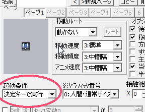
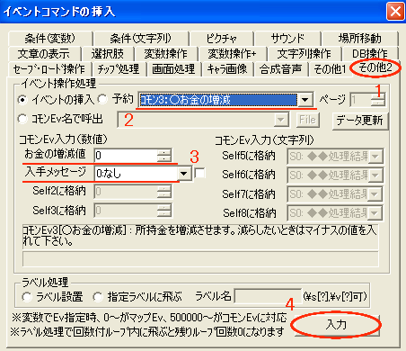
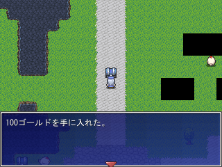

| 所持金を増減するイベントを作成します。 具体的には、宝箱を調べるとお金が手に入るイベントです。 |
|
まずは◆決定キーで起動するイベントを参考に、マップイベントを作成します。 |  |
|
次に、イベントウィンドウの右下にある「■コマンド入力ウィンドウ表示■」をクリックしてください。
| |
|
「イベントコマンドの挿入」ウィンドウが出たら、 その他2タブをクリックしてください。画像の1 タブが切り替わったら、 イベントの挿入部分を クリックして 「ｺﾓﾝ3:○お金の増減」 を選びます。画像の2 |
 |
| ｺﾓﾝEv入力(数値)を見てください。【3】画像の3 お金の増減値には増減したい金額を入力します。 ※数値が-(マイナス)なら減少です。 入手メッセージの所をクリックすると、お金の増減時にメッセージを表示するかどうかを選択できます。 ※○○ゴールドを手に入れた。など 設定が終わったら【3】画像の4、入力ボタンをクリックします。 これでイベントは完成です。 |
|
忘れないうちにセーブしておきましょう。 |  |
|
最後に、テストプレイをクリックしてイベントの動作を確認します。 画像は入手メッセージ「あり」の場合です。 「なし」に設定していた場合は、Xキーを押してメニューから確認してください。 以上で「所持金を増減させたい」は終了です。 お疲れ様でした。 |  |
| このままでは、調べるたびに何度でもお金が手に入ります。 一度だけ手に入れるイベントの作り方は、◆一度開いたら空きっぱなしの宝箱をご覧下さい。 |